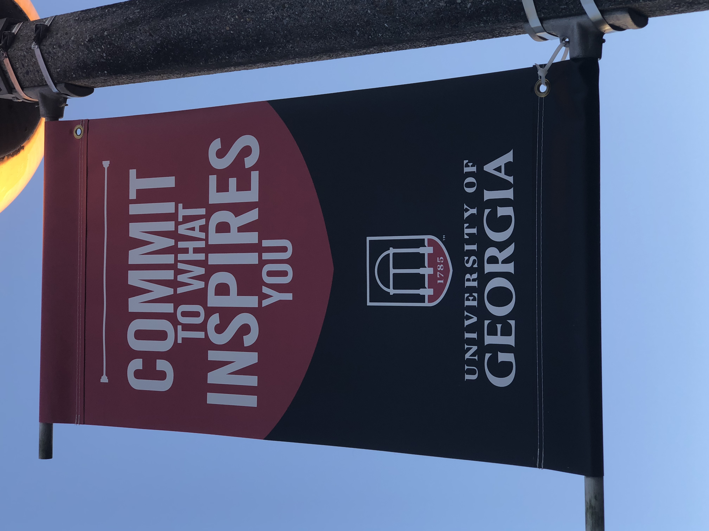

Hello, my name is Colin Hannah and welcome to my created web page. This web page details my hobbies and my career interests as a student, all of which greatly contribute to who I am as a person and a student while attending The University of Georgia! ↓ ↓ ↓

| Course Name | Course Title | Location | Time |
|---|---|---|---|
| Intro to Pre-Calculus | UNIV 1110 | Miller Learning Center | 9:05am-9:55am MWF |
| Topics in Computing with Lab | CSCI 1100 | Forestry Resources | 1:25pm-2:15pm MWF |
| Intro to Anthropology | ANTH 1102 | Miller Learning Center | 2:00pm-3:15pm TR |
| Intro to Human Geography | GEOG 1101 | Geography | 2:30pm-3:20pm MWF |
I was born in Atlanta, Georgia and have lived in Georgia my entire life. I recently transferred to UGA from Georgia State University this past semester. Both of my parents have graduated from the University of Georgia, and I have been a Georgia Bulldogs fan since I was a young child.
As a current student at the University of Georgia, I will be changing my major to Entertainment and Media Studies and my minor to Consumer Economics this Spring 2018. I feel this major is most pertinent to my career interests and onward career progression moving forward. I have always held a general interest in pursuing a career through creative endeavors, which has led to garnering strong interests in music, film, and storytelling. I want to further my studies in the contributions that arise from media and pursue a potential career within that field.
While spending time at the University of Georgia, I enjoy shopping for vinyl records, spending time with friends, and I have recently enjoyed playing racquetball at the Ramsey Student Center. I am a fan of the Georgia Bulldogs Football Team and look forward to my first experiences in the student section next semester.